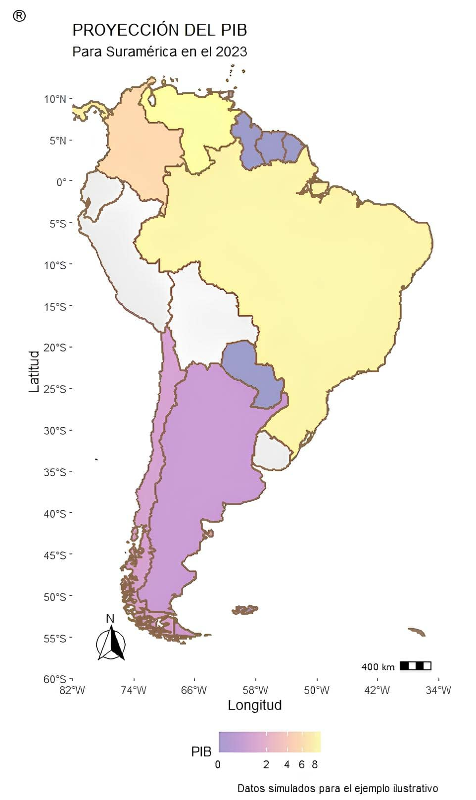
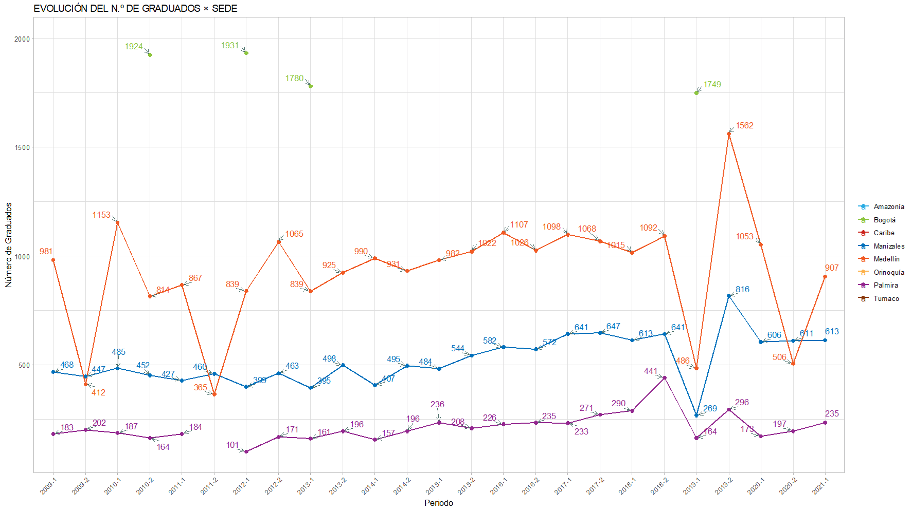
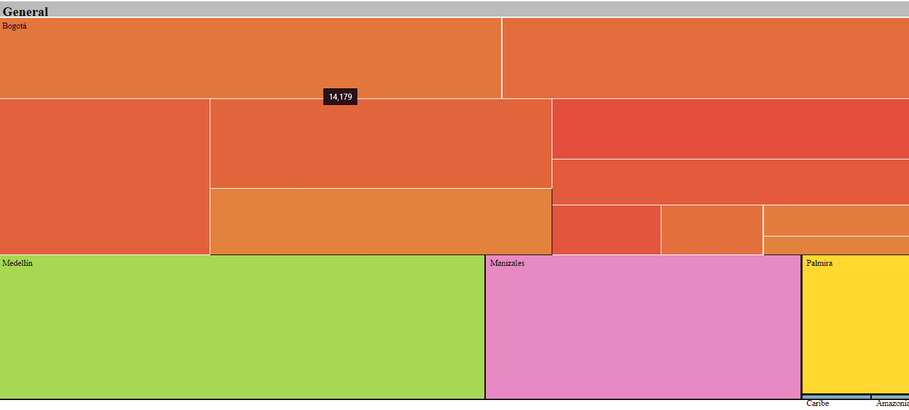

El paquete UnalR proporciona métodos y herramientas para la gestión y disposición de estadísticas institucionales. Su objetivo principal es disponer, facilitar y optimizar la disposición de microdatos y la visualización de las cifras y estadísticas oficiales de la Universidad Nacional de Colombia las cuales se encuentran disponibles, dentro del sistema de planeación institucional, en el componente de estadísticas oficiales. Contiene una biblioteca de funciones gráficas, tanto estáticas como interactivas, que ofrece numerosos tipos de gráficos con una sintaxis altamente configurable y simple. Entre estos, encontramos la visualización de tablas HTML, series, gráficos de barras y circulares, mapas, boxplots, radar charts, treemaps, drilldown, etc. Todo lo anterior apoyado en bibliotecas de JavaScript.
El paquete UnalR permanecerá en su estado actual y se mantendrá solo con correcciones de errores.
Instalación
Puede instalar la versión publicada de UnalR (versión menor) desde GitHub con:
# Versión oficial (estable)
install.packages("UnalR")
# Última versión (dev)
devtools::install_github("estadisticaun/UnalR")
remotes::install_github("estadisticaun/UnalR")Uso
Es difícil describir de manera sucinta cómo funciona UnalR porque encarna una profunda filosofía de visualización que abarca las principales librerías para representar de forma dinámica e interactiva datos usando JavaScript (htmlwidgets).
Ejemplo

example(topic = Plot.Barras, package = "UnalR")
example(topic = Plot.Boxplot, package = "UnalR")
example(topic = PPlot.Histograma, package = "UnalR")
example(topic = Plot.Mapa, package = "UnalR")
example(topic = Plot.Mundo, package = "UnalR")
example(topic = Plot.Series, package = "UnalR")
example(topic = Tabla, package = "UnalR")
example(topic = Plot.Treemap, package = "UnalR")
Ayuda
Si requiere ayuda para usar UnalR:
- Para problemas de instalación, comuníquese a los correos electrónicos proporcionados en la documentación del paquete, normalmente respondemos con prontitud y usted también ayudará a futuros usuarios.
Si cree que ha encontrado un error:
- Instale la versión de desarrollo de
UnalRusandodevtools(ver arriba) y vea si eso ayuda. - Consulte los problemas de github.
¡Gracias por tu interés en UnalR!